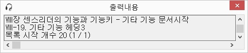
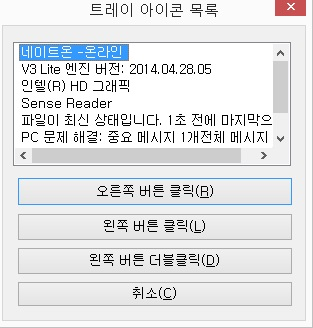
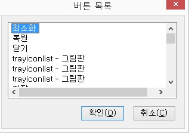

편집창이나 가상커서 상에서 문서를 읽을 때 방향키를 일일히 내리지 않고 현재 줄부터 문서 끝까지 자동으로 읽어주는 기능입니다. 한 번의 키조작으로 내용을 살펴볼 수 있어 독서나 인터넷 검색시에 아주 편리한 기능입니다.
연속읽기가 시작되면 모든 기능키들은 사용할 수 없습니다.
연속읽기에서 사용되는 기능키들은 다음과 같습니다.
1. <SPACE> 일시중지/해제
연속읽기 상태에서는 일시중지되며, 일시중지 상태에서 다시 누르면 현재 줄부터 다시 연속읽기를 실행합니다.
2. <ESCAPE> 연속읽기 종료
연속읽기를 종료합니다.
연속읽기 실행 중 <Alt-Tab>키를 눌러 다른 프로그램 창으로 전환될 경우에도 연속읽기는 중지됩니다.
3. <위 화살표> 현재 줄의 이전 줄로 이동하여 읽기
현재 줄의 윗줄로 이동하여 연속읽기를 계속 진행합니다.
4. <아래 화살표> 현재 줄의 다음 줄로 이동하여 읽기
현재 줄의 다음 줄로 이동하여 연속읽기를 계속 실행합니다.
5. <PAGEUP> 한 페이지 이전으로 이동하여 읽기
현재 라인의 이전 페이지로 이동하여 연속읽기를 계속합니다.
6. <PAGEDOWN> 다음 페이지로 이동하여 읽기
다음 페이지로 이동하여 연속읽기를 계속 실행합니다.
7. <CONTROL> 음성출력 선택/해제
음성출력 중인 연속읽기 상태라면 음성출력을 중단하고 커서만 아래 방향으로 이동합니다. 음성출력이 정지된 상태에서는 다시 음성출력을 합니다.
8. <ENTER> 가상커서 링크 선택
가상커서 상태에서 링크를 만났을 때 <Enter>키를 누르면 연속읽기를 중단하고 링크된 곳으로
이동합니다.
최근 출력된 음성 메시지를 편집창 형태로 다시 확인할 수 있는 기능입니다.
최근 50개의 출력 메세지를 확인할 수 있으며, 복사 같은 클립보드 기능을 이용할 수 있습니다.

현재 선택된 윈도우 범위의 내용을 편집창 형태로 출력합니다.
방향키를 이용해 내용을 확인할 수 있으며, 읽기모드 동작 중에는 다시 읽기모드를 호출하는 것과 출력 내용 확인 기능을 사용할 수 없습니다.읽기모드창을 닫으려면 <Esc>키를 누릅니다.
어떤 응용 프로그램의 기능키와 센스리더의 기능키가 중복될 때 응용 프로그램의 기능키를 실행하기 위해 센스리더가 한 번 기능키를 처리하지 않고 그냥 통과시키는 기능입니다. 이 기능은 가상커서 상태에서는 동작하지 않습니다.
예를 들어, 아크로 에디터의 '다른 이름으로 저장' 기능과 센스리더의 '출력 내용 확인' 기능은 두 기능 모두 단축키가 <F12>키입니다. <F12>키를 누르면 항상 우선권을 가지고 있는 센스리더의 출력 내용 확인 기능이 동작하게 되는데 사용자가 아크로 에디터의 '다른 이름으로 저장' 기능을 실행하고 싶다면, <Ctrl-Shift-N>키를 한 번 눌러 이후 눌려지는 기능키 처리를 하지 않도록 한 다음 <F12>키를 눌러주면 됩니다.
일반적인 에디터나 워드 등에서 찾기 기능으로 문자열을 찾을 때 검색 후에도 대화상자는 닫히지 않아 결과를 확인하기가 쉽지 않습니다. 이런 경우 '결과 줄 읽기' 기능을 사용하면 대화상자가 그대로 남아있는 상태에서도 결과 줄을 확인할 수 있습니다.
이 기능은 모든 문서편집기에서 사용할 수 있는 것은 아니며, 메모장이나 워드패드, MS워드 등의 프로그램에서만 동작합니다.
트레이 아이콘 목록을 조사해서 목록상자 형태로 출력합니다.
트레이 목록을 구성할 때 약간 시간이 지연될 수 있음으로 '트레이 아이콘 목록' 대화상자가 나타날 때까지 잠시 기다려야 합니다.

트레이 아이콘 목록이 출력되면 원하는 아이콘에 다음과 같은 동작을 수행할 수 있습니다.
1. 오른쪽 마우스 버튼 클릭
현재 선택된 아이콘에 오른쪽 마우스 버튼을 클릭합니다.
'오른쪽 버튼 클릭' 버튼이 디폴트 버튼이기 때문에 아이콘 목록에서 <Enter>키를 눌러도 됩니다.
2. 왼쪽 마우스 버튼 클릭
현재 선택된 아이콘에 왼쪽 마우스 버튼을 클릭합니다.
3. 왼쪽 마우스 버튼 더블 클릭
현재 선택된 아이콘 목록에 왼쪽 마우스 버튼을 더블 클릭합니다.
4. 취소
'트레이 아이콘 목록' 대화상자를 닫습니다.
현재 활성창 내의 화면에 표시된 버튼들을 목록으로 구성해 줍니다.

버튼목록에서 방향키를 이용해 원하는 버튼에 위치한 뒤 엔터키를 누르면 해당 버튼을 클릭해 줍니다.
버튼 이름을 변경하고자 할 경우, 이름 변경을 원하는 항목을 선택한 후 <F2>키를 누릅니다. 버튼 이름 입력' 대화상자가 나타나면 원하는 이름을 입력한 뒤 '확인' 버튼을 눌러 변경할 수 있습니다. 이 때 편집창의 내용을 모두 삭제한 후 '확인' 버튼을 누르면 원래 버튼의 이름으로 돌아갑니다.
센스리더를 종료합니다.
사용자의 실수를 대비하여 '종료 확인' 대화상자를 출력합니다. '예' 버튼을 누르면 프로그램이 완전히 종료됩니다.
센스리더의 사용자 인증을 재시도합니다.
윈도 부팅시 네트워크 구성이 늦어지게 되면 인터넷 인증에 실패하여 센스리더가 데모로 동작할 수 있습니다. 이런 경우 사용자 인증을 재시도하는 기능입니다.
인터넷 인증이 이미 성공된 경우 "정상 동작중입니다"라는 음성 메세지가 출력되며, 데모인
경우에는 "인터넷 인증을 재시도합니다"라는 메세지와 함께 인터넷 인증을 재시도합니다.
만약, 여러 가지 이유로 인터넷 연결에 문제가 생긴 경우 센스리더는 이전에 저장해 두었던 내부 인증서를 통해 사용자 인증을 하게 됩니다.
* 만일 사용자 정보가 저장되지 않은 상태에서 사용자 인증을 시도할 경우 '사용자 정보 입력' 대화상자가 출력됩니다.
* 사용자 인증 재시도 기능을 실행하여 인증에 성공한 경우 사운드를 출력하고 싶다면 [소리 및 문자열 설정] 메뉴를 실행하여 일반 항목에서 설정하면 됩니다.
센스리더를 점자 디스플레이 장치와 연결해 사용하는 동안 점자가 깨지는 등의 오류가 발생하는 경우 관련 설정값들을 초기화해주는 기능입니다.
센스리더 [점자]메뉴의 [점자 디스플레이 초기화]메뉴와 같은 동작을 합니다.
센스리더의 도움말을 호출합니다.
도움말은 일반적인 Html 구조로 되어 있기 때문에 화살표 키를 이용해 문서 편집기에서 문서를 읽듯이 편리하게 이용이 가능합니다.
또한, <Tab> 키를 이용해 링크 단위로 이동할 수 있고, <Enter> 키를 누르면 하위 항목으로 이동합니다.